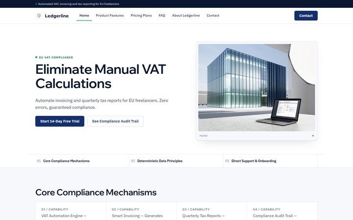
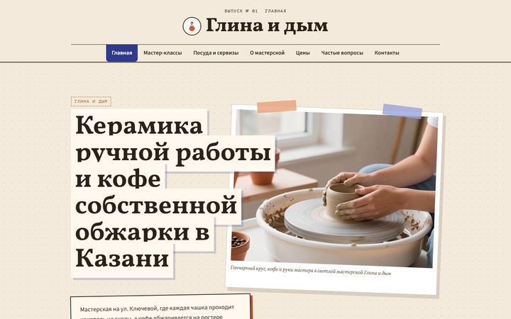
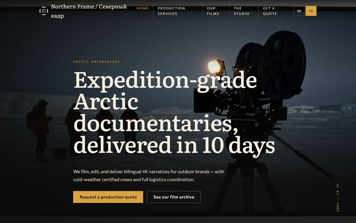

Live demos
Each site was built from a short brief on one laptop GPU (RTX 4080 Laptop, 12 GB VRAM): plan, copy, layout and images.

Ledgerline
VAT automation for EU freelancers.
Open demo →
Глина и дым
Ceramics studio and coffee roastery in Kazan.
Open demo →
Northern Frame
Arctic documentary production.
Open demo →Static HTML/CSS/JS with SEO / AEO / GEO metadata, JSON-LD, sitemap.xml and llms.txt, written by SmartLLM's deterministic compiler.